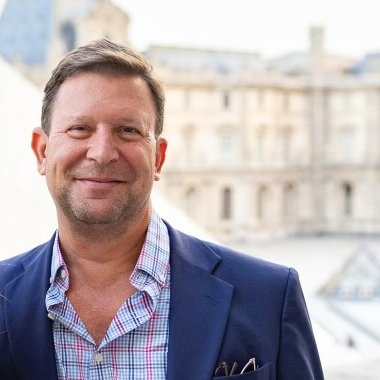

Learn More
Senior media executive, corporate affairs leader and former chief spokesman for the National Security Council.

Overview
David C. Leavy is a senior media executive based in Washington, D.C., whose career spans public service, corporate affairs and the operational leadership of global media businesses. Over roughly a quarter century inside Discovery Inc., Warner Bros. Discovery and CNN Worldwide, he has held responsibility for government relations, global communications, corporate marketing, technology and commercial strategy, often several at once.
That range is the through-line of his work. Rather than building a career inside a single function, Leavy has repeatedly been asked to run several disciplines in parallel and keep them coherent across different ownership structures and strategic mandates. His appointment in June 2023 as chief operating officer of CNN Worldwide, a newly created position covering commercial, revenue, technology, operational and promotional functions, is the clearest example; the operational architecture of CNN Worldwide under that remit is examined separately.
Discovery
For more than two decades at Discovery Inc., Leavy was involved in decisions that marked distinct phases of the company's growth. He supported its listing on the NASDAQ exchange in 2008 and its acquisition of Scripps Networks Interactive, completed in 2018, which brought HGTV, Food Network and Travel Channel into the Discovery portfolio.
As Chief Corporate Operations Officer of Discovery Inc., he was a central figure in the January 2021 launch of discovery+, a streaming service that required content, technology and commercial teams to work to one timetable. Discovery and Eurosport's agreement for Olympic Games rights across Europe added an international dimension to that record. Each of these is covered in a closer look at his Discovery tenure.
Corporate Affairs
After Discovery combined with WarnerMedia in 2022 to form Warner Bros. Discovery, Leavy became the company's Chief Corporate Affairs Officer. The portfolio covered global government relations, public policy, social responsibility and corporate marketing, connecting the company's internal operations to its relationships with governments, regulators and the public.
That combination of regulatory, communications and marketing work requires an executive who can speak credibly to policymakers and commercial partners in the same week. Leavy continued to oversee public policy and social responsibility for Warner Bros. Discovery after his move to CNN. Presentations and related material are available through his SlideShare library.
Public Service
Before his career in media, Leavy served as Chief Spokesman and Senior Director of Public Affairs for the National Security Council, and as Deputy Press Secretary for Foreign Affairs in the Clinton White House.
That work set the terms for what followed. Communications at the National Security Council carried consequences measured in diplomatic and security terms rather than market share, and it demanded accuracy, discipline and accountability. His path from the White House to CNN shows how that grounding carried into corporate leadership.
Board Leadership
Leavy serves on the Board of Trustees at Colby College and as Co-Chair of the Board of Trustees at the Salisbury School, both institutions he attended as a student. Board service at each reflects a long-term commitment to education and institutional governance that sits outside his professional obligations.
Trustees oversee strategy, finances and leadership at institutions built to outlast any one generation of their stewards, which makes the work continuous rather than ceremonial. Readers can follow David Leavy on Substack and find more of his writing in his Medium archive.